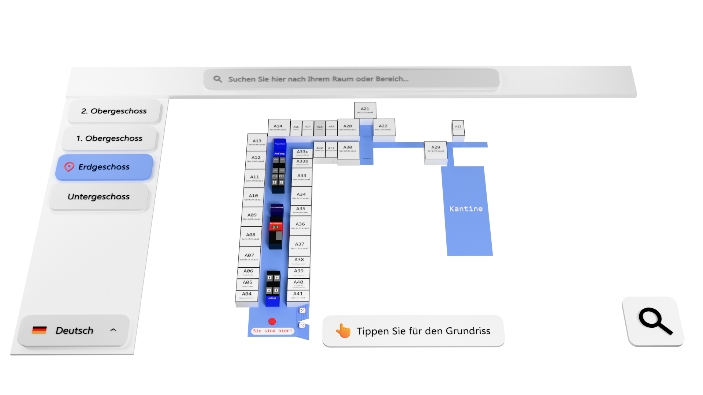

Die Startseite
Auf der Startseite sehen Besucher ein 3D-Modell des Grundrisses, das den Aufbau des Gebäudes zeigt. Es ist bewusst einfach gestaltet, damit jede Altersgruppe sofort zurechtkommt.
Interaktives 3D-Modell
Besucher können heranzoomen und auf jeden Bereich und Raum klicken, um eine Wegbeschreibung zu erhalten.

3D-Animationen
Beim Klick auf einen Raum wird eine verständliche 3D-Animation gezeigt, die den Weg Schritt für Schritt darstellt.
Intelligente Suchfunktion
Über die Suchleiste finden Besucher schnell jeden Raum im Gebäude und können sich direkt dorthin leiten lassen.